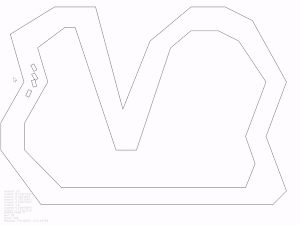

Here are some of my projects that I've made while teaching myself
Machine Learning. These are the projects that at least have
some visual component, mostly games with some sort of
Neuro-Evolution. Other projects dealing with large data sets
and predicting values pretty boring to put on a website. But
I can link to the github code for those as well.
In each project's page I've put some description and links to the
code on the P5JS's web editor. I've made several variants of
each project. Most were originally written in Java or
Python, but I made Javascript versions so they could be accessible
in a browser.
Also for each project I have 3 versions, 1 with my own vanilla code to create and train the Neural Networks, 1 using Tensors but not creating a model (using the tensor's linear algebra functions to calculate the weights and outputs), and 1 using the Layers API to create a full TensorFlow model.
SPOILER: the TensorFlow Models actually performed the
worst. That's just because the model has so much
functionality built into it, that isn't useful in these simple
cases, and it slows the program to a crawl.
2 huge influences are Code Bullet and of course Coding Train.
| Autonomous
Vehicle Neuro Evolution  Project Page: Autonomous Vehicle link to code: Car Track NE javascript |
Google's
Dino Run Neuro Evolution Project Page: Dino Run link to code: Dino NE javascript |
|
Dots
Plain Genetic Algorithm and Neuro Evolution
Project Page: Dots GA/NE
link to code: Dots GA javascript |
Snake Game
Neuro Evolution difficutly level: surprisingly harder than expected. Project Page: Snake Game NE link to code: Snake NE Javascript |
| Worlds
Hardest Game difficulty level: banged this out in a few hours* Project Page: WHG link to code: WHG NE Javascript |
Rubix Cube: Coding Train uploaded a Processing program of a Rubix Cube. I want to try to use a genetic algorithm to solve it. So far I've got a population of independent cubes, now I have to make sure every generation starts at the same initial scramble, create a fitness function, and some sort of crossover function. |
| Matter.js I started working on a walking simulation, but ran into issues with matter.js. I hope to come back to it someday link to code: Matter.js code |
Here is a link to a simple Genetic Algorithm where dots find their way to a goal. Dots GA javascript
Here is a link to the Flappy Bird NeuroEvolution code I made using Coding Train's and Code Bullet's code as a reference. I've made a library of NE code that I've used in several other games.
Flappy NE javascriptHere is a link to Google's Dino runner game using NeuroEvolution Dino NE javascript
Here is a NE of a car going around a track using a Neural Net to
process it's vision and steer. It takes around 50 generations to
master the track, but when it does the 'brain' can be saved,
loaded onto a different track and run perfectly. I'll add the
'save model' and the alternate track soon. PRESS spacebar to hide
the sensors and gates to make the program run faster Car
Track NE javascript
todo:
all - fix code links
car track
- upload player.csv
- add instructions how to load